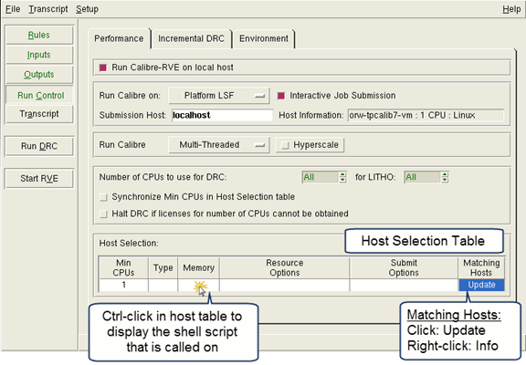

You
can specify that your Calibre Interactive job runs on the IBM Spectrum
LSF computing system.
Spectrum LSF (Load Sharing Facility) is a distributed
computing solution and requires a commercial license. For complete
details on configuring this environment, refer to the products documentation.
Prerequisites
Spectrum
LSF must be installed on the host machine and on every machine that
you may potentially query or submit jobs to.
For
runs using remote hosts, configure your environment to allow rsh
to execute your Calibre job remotely. This may include creating
and editing a .rhosts file in your home directory.
Procedure
- Click the Run Control button
on the left panel of Calibre Interactive.
- In the Performance tab,
choose Platform LSF from the “Run Calibre on” dropdown list.
- Choose the setting for “Interactive
Job Submission”:
- Specify the “Submission Host”
if it is not the same host that Calibre Interactive is running on.
If localhost is specified as
the submission host, then remote submission does not take place,
and the LSF job is submitted by localhost.
The submission command obeys
the remote shell and remote user name settings on the Run Control
pane on the sub-tab.
If the environment variable
LSF_ENVDIR is defined in the localhost environment or the Calibre
Interactive session, then the following line is added to the script
executed by Calibre Interactive:
.$LSF_ENVDIR/profile.lsf
so
that LSF settings are available in the submission host.
- Choose Run Calibre options
for your job. For details refer to Table 2 in the topic “Specifying the Host Processor and Run Options”.
In particular, for multithreaded runs, you can specify
“Synchronize Min CPUs in Host Select table” to force Min CPUs in
the host selection table to be the same as the number of CPUs specified
for “Number of CPUs to use for app.” For DRC
and DFM runs, the Min CPUs value is set to the greater of the “Number
of CPUs to use for app” and “for LITHO” values.
- Specify
host information.
Calibre Interactive
displays the Host Selection table as shown in the next figure for multithreaded
execution. If you specify to run Calibre in “Distributed (MTflex)”
mode, both a primary host selection table and a remote hosts selection
table are displayed.
If you select Platform LSF
and the LSF resource is unavailable, Calibre Interactive prints
an error message to the shell and the Matching Hosts column displays
0.
Figure 1. Spectrum LSF Dialog
Box
- Use the Min CPUs, Type, and
Memory columns in the Host Selection table, as shown in the following
table, to define the filter criteria that you want used to determine
the list of available hosts on your network. The table shows the
columns displayed for multithreaded mode; a slightly different set
of columns is displayed for MTflex mode.
Table 1. Resource Option Variables for Spectrum
LSFColumn Name
|
Filters on
|
Corresponding Substitution Variable
|
|---|
Min CPUs
|
Minimum number of available
CPUs for each host.
This entry cannot be edited if “Synchronize Min CPUs in Host Select
table” is checked.
|
%c
|
Type
|
Machine type.
|
%o
|
Memory
|
Minimum amount of memory available
on each host in megabytes.
|
%m
|
N/A
|
Primary host name. (Only
available as a resource option for a remote host.)
|
%M
|
- After you enter your criteria
in these three columns, click in the Matching Hosts column (below
the column title) to query for available hosts matching your criteria. The
number of hosts that match your specified criteria display in the
Matching Hosts column.
Tip You can right-click in the
Matching Hosts column (below the column title) to view additional
information about available hosts.
- Click in
the Resource Options column (below the column title) and enter any additional
custom resource options that you want in addition to those already specified
in the first three columns of the table. These options represent
arguments for the Spectrum LSF resource requirement switch, -R.
For examples
of resource options specification statements, see “Example Spectrum LSF Configurations”. For additional information
on LSF syntax, please refer to the Spectrum LSF production documentation.
If the Resource Options field
is not specified, the host is selected based on the Min CPUs, Type,
and Memory columns only; this is the default behavior.
- Enter options
unrelated to resource settings in the Submit Options column. For information
on possible options, refer to the Spectrum LSF production documentation.
For multithreaded (MT) runs
only, you can use the %b parameter in the Submit Options column.
%b is substituted with the setting from “Number of CPUs to use for app”
on the Run Control pane of Calibre Interactive; “All” is substituted
for %b if “Number of CPUs to use for app”
is “All”. The %b parameter can be used so that the number of CPUs
used for the job matches what is specified for the Calibre run with
the ‑turbo option.
- Click the Environment tab
and configure the remote options appropriate for your run. For an
example remote setup configuration, see “Configuring the Remote Environment”.
Results
When the number
of CPUs is specified, the Spectrum LSF job is submitted using the
-n option for both primary and remote hosts to obtain an even distribution
of CPUs. The ‑n option should not be used in the Submit Options
column.
The LAUNCH CLUSTER command is used
to specify connection parameters; see “LAUNCH CLUSTER”
in the Calibre Administrator’s Guide.